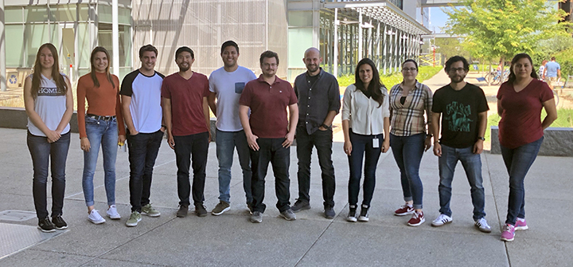
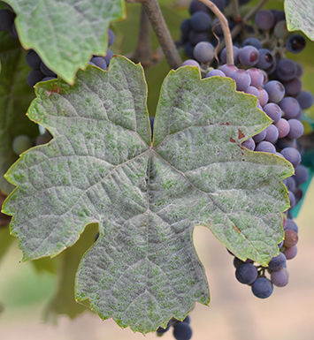
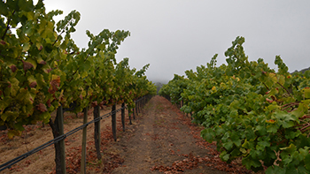

Welcome to the Cantu Lab
We are a research group that studies the interaction between plants and microorganisms. We integrate principles of systems biology, genomics and quantitative genetics and use bioinformatics, biochemistry and molecular biology to study plant and microbial activities in a variety of contexts, from disease resistance, wood decomposition, to fruit ripening, and flavor development.

Interested in joining our group? Students and researchers at any level in their career (postdoc, PhD, MSc, BSc) and with outstanding training in plant molecular biology, genetics, or bioinformatics are invited to contact us to discuss possible projects. The Cantu lab is accepting MSc students from Viticulture and Enology and PhD students from Plant Biology, Plant Pathology, Integrative Genetics and Genomics, and Horticulture and Agronomy.
